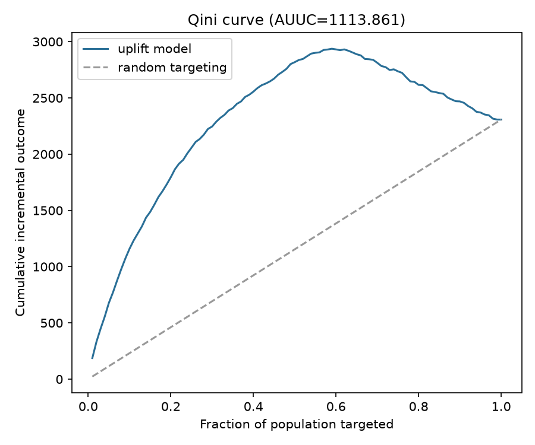
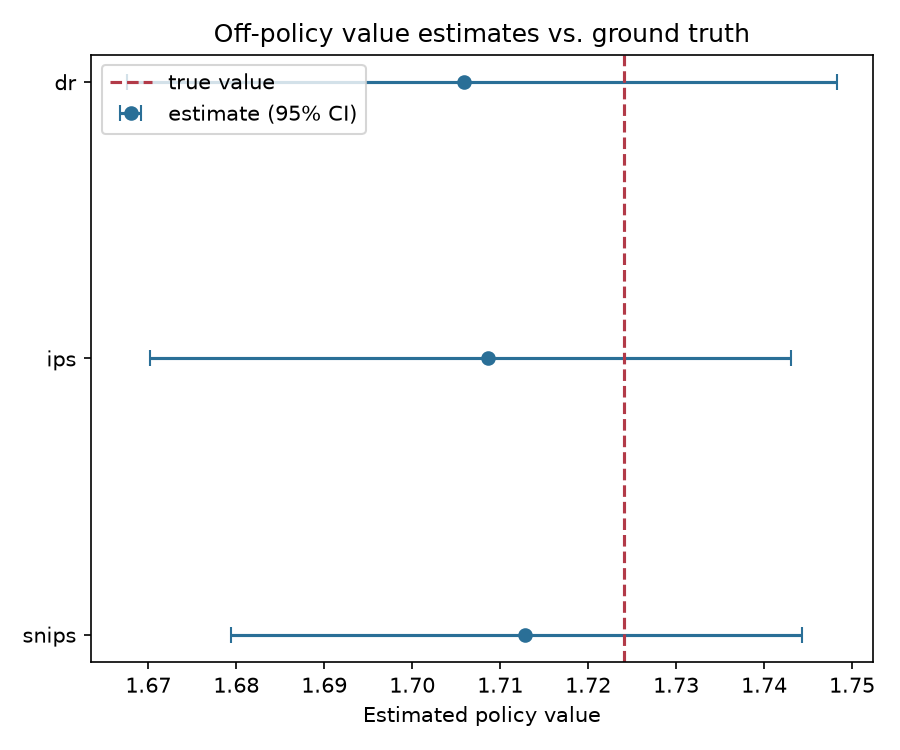
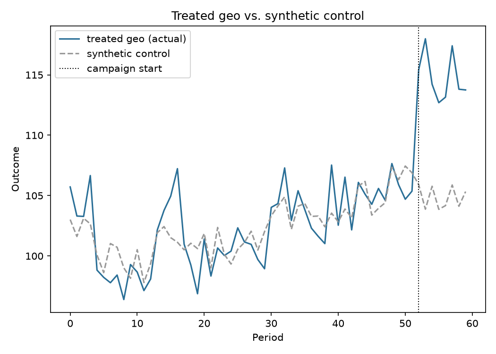

uplift (who to target) → ope (worth an A/B test?) → geolift (did the rollout work?)
Trained a x_learner on randomized campaign data, targeting the top 30% of the population by predicted CATE. AUUC = 1113.86 (Qini curve above random targeting).

Vetted that policy against logs from a different, non-uniform production policy, using only historical data. Doubly-robust estimate: 1.7059 [1.6675, 1.7483] vs. the current policy's empirical value 1.5723 — estimated +8.50% relative lift, before running any live experiment.

The vetted policy got rolled out as a broad geo-level campaign. Injected effect (derived from step 2's DR estimate, clipped to ±50%): +8.50%. Synthetic control's recovered estimate: +9.48%, placebo p-value 0.048.

| Stage | Question | Answer |
|---|---|---|
| Uplift | Who to target? | Top 30% by predicted CATE |
| OPE | Worth testing? | Yes (DR est. +8.50% vs. current) |
| Geolift | Did it work? | +9.48% measured (p=0.048) |